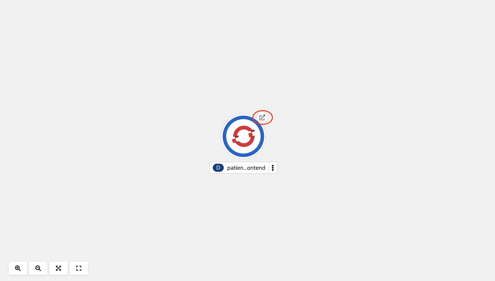
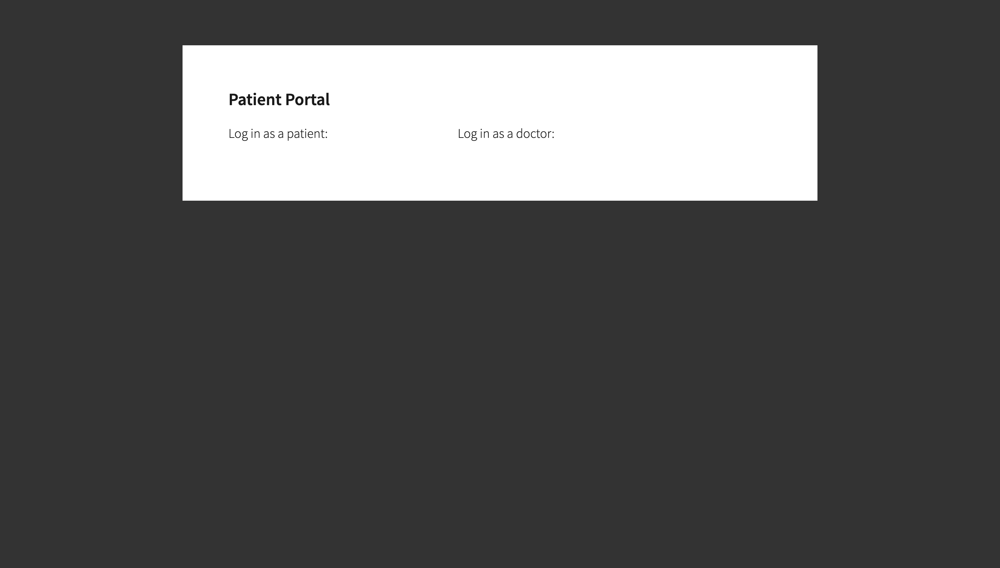
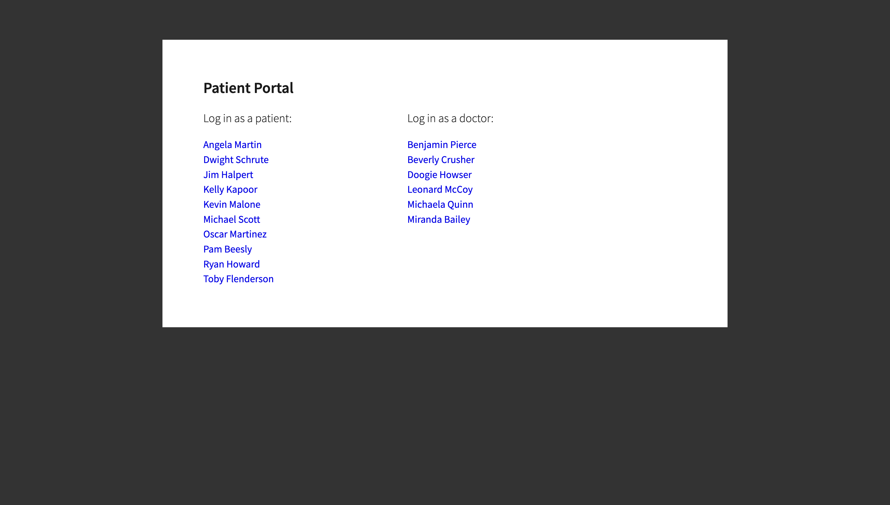
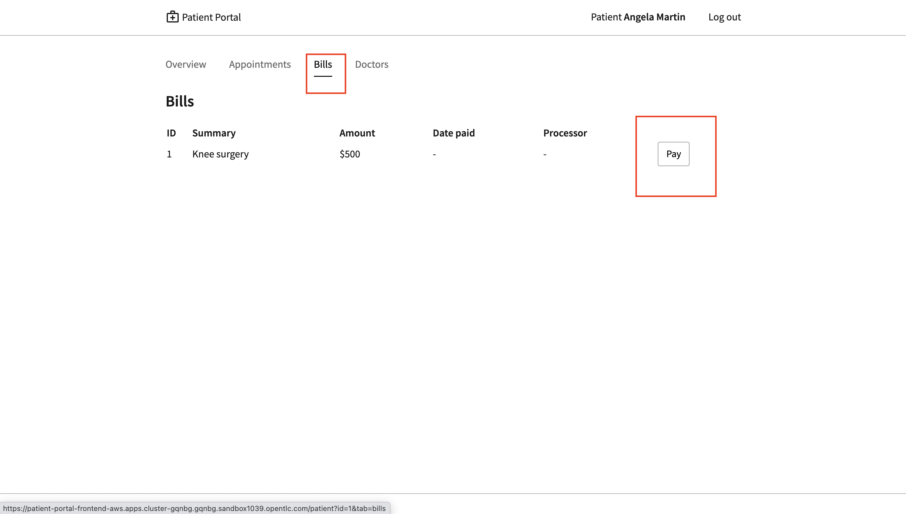
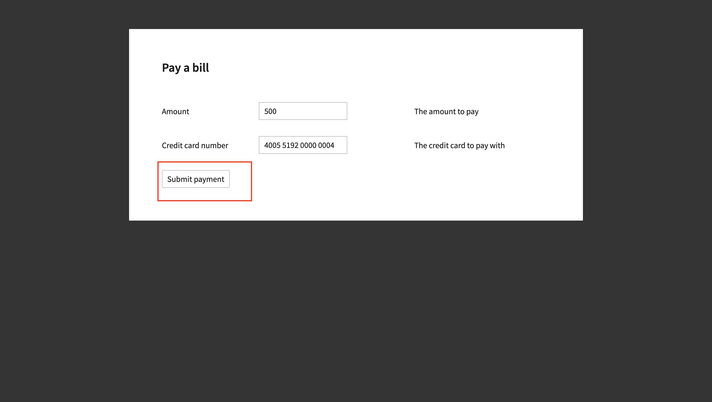
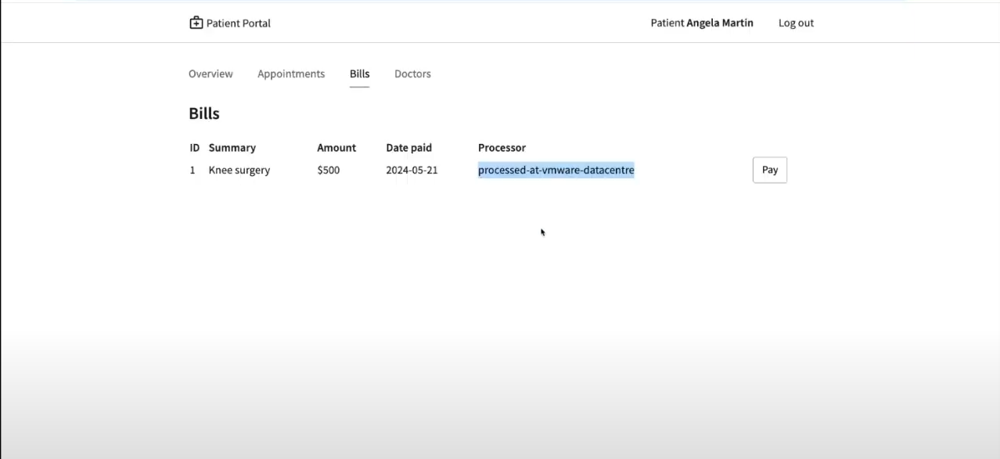
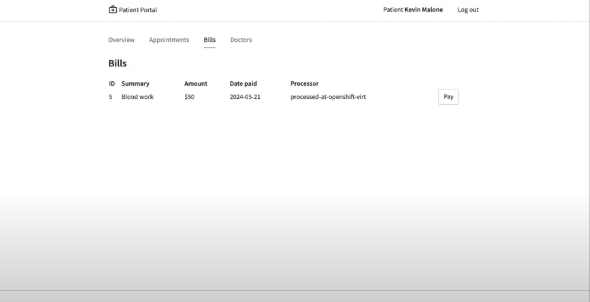

Solution Pattern: Minimize Downtime when Migrating from Hypervisors to OpenShift Virtualization
See the Solution in Action
1. Demonstration
1.1. Watch a demonstration
In this video you can see a quick demonstration of the solution:
Next, you can learn how to walkthrough this demo.
2. Run the demonstration
2.1. Before getting started
To set up the demo, you will need the following prerequisites:
-
A virtual machine running RHEL 9 on any of the VMware platforms. Vsphere, VMware fusion or VMware workstation . We will deploy the database and payment processor here.
-
A similar virtual machine running RHEL 9 on OpenShift Virtualization. We will migrate the payment processor here. You can try it for free in the Red Hat Developer Sandbox
-
Install podman(v4 or greater) on both the VMs to run the application containers.
-
An OpenShift cluster to deploy the frontend of the application.
2.2. Installing the demo
Run the following setup scripts in the respective environments:
Hypervisor VM:
OpenShift Virtualization:
OpenShift cluster:
2.3. Connecting the services in the OpenShift cluster to the Hypervisor VM with Red Hat Service Interconnect
-
The setup scripts have already deployed the frontend in the OpenShift cluster and the database and payment processor in the Hypervisor VM. All these are currently not connected to each other. Let’s verify the same by looking at the Patient portal. Open the openshift route of the patient portal frontend deployed in the frontend namespace of the OpenShift cluster. It should look empty without any patient and doctor names.
 -
First Initialize Red Hat Service Interconnect router in the OpenShift Cluster, in the namespace where the front end is running:
oc project frontend skupper init --enable-console --enable-flow-collector --console-auth unsecuredLearn more about the functions and the attributes of the router
-
Create a secure connection token on the OpenShift cluster. The router in the Hypervisor VM will use this token to establish a secure connection with the OpenShift cluster.
skupper token create secret_vmware.tokenLearn more about the functions and the attributes of the token
-
Display the token and copy it in a text editor
cat secret_vmware.token -
Initialize Service Interconnect router in the Hypervisor based VM
export SKUPPER_PLATFORM=podman skupper init -
After the router is initialized it will use the token to create the link. First create a file for the token on Hypervisor VM and copy the content of the token you copied.
vi secret_vmware.token -
Create the link by running the following command in Hypervisor VM
skupper link create secret_vmware.token --name openshift-to-vmLearn more about the link
-
Expose the database and payment processor over the network by running this command in Hypervisor VM . The skupper expose command makes this service accessible across the Service Interconnect network.
skupper expose host portal-database --address database --port 5432 skupper expose host portal-payments --address payment-processor --port 8080 --protocol http -
Create the corresponding virtual service on the OpenShift Cluster. The Service Interconnect router will use this virtual service to route the traffic to the Hypervisor VM. The frontend will call this local services to access the database and payment processor without realizing that they are remote services. This makes the remote service really portable. As long as they are exposed using the same service name on the network, the frontend should be able to communicate with them irrespective of where they are deployed.
skupper service create database 5432 skupper service create payment-processor 8080 --protocol http -
Refresh the frontend webpage in the browser and you should now be able to see a list of patients and doctors.
 -
Click on patient Angela Martin

-
Go to the bills tab and make a payment
 -
Submit the payment
 -
You should see the payment processed and it shows where the payment has been processed. When we successfully migrate the payment processor, to a VM on OpenShift Virtualization, the field should show processed at openshift virt.

2.4. Connect the OpenShift Cluster (frontend) to the OpenShift Virtualization VM (Database and Payment Processor)
The task now is to gradually migrate all the components from the Hypervisor platform to the OpenShift Virtualization. Below are some conditions to follow while migrating the components.
* No downtime during and after the migrations * No code changes to the front application.
-
Initialize Red Hat Service Interconnect router in the OpenShift Virtualization environment
export SKUPPER_PLATFORM=podman skupper init -
Deploy the database and payment processor on the OpenShift Virtualization environment
-
For X86
podman run --name portal-database --detach --rm -p 5432:5432 --network skupper quay.io/redhatintegration/patient-portal-database:devnation podman run --name portal-payments --hostname processed-at-openshift-virt --detach --rm -p 8080:8080 --network skupper quay.io/redhatintegration/patient-portal-payment-processor:devnationOR
-
For ARM
podman run --name portal-database --detach --rm -p 5432:5432 --network skupper quay.io/redhatintegration/patient-portal-database-arm64:latest podman run --name portal-payments --hostname processed-at-openshift-virt --detach --rm -p 8080:8080 --network skupper quay.io/redhatintegration/patient-portal-payment-processor-arm64:latest
-
-
Create a secure connection token on the OpenShift cluster. The router in the OpenShift Virtualization environment will use this token to establish a secure connection with the OpenShift cluster.
skupper token create secret_virt.token -
Display the token and copy it in a text editor
cat secret_virt.token -
Create a file for the token on OpenShift Virtualization VM and copy the content of the token you copied.
vi secret_virt.token -
Create the link by running the following command in Hypervisor VM
skupper link create secret_virt.token --name virt-to-openshift -
Expose the database and payment processor over the network by running this command in OpenShift Virtualization VM . The skupper expose command makes this service accessible across the Service Interconnect network.
skupper expose host portal-database --address database --port 5432 skupper expose host portal-payments --address payment-processor --port 8080 --protocol http
Assume this as the transitioning stage, where we have services running on both the Hypervisor and OpenShift Virtualization, simultaneously. Red Hat Service Interconnect automatically load balances traffic between the two environments. The developers can also control where the majority of the traffic is sent based by assigning costs to the network links.
After thorough testing, the development team concludes that they can now switch 100% of the traffic to the OpenShift Virtualization environment. They could either do this by bringing down the services on the VM or breaking the link between the Hypervisor and OpenShift cluster. This pattern show cases the latter. Once this is done Service Interconnect will automatically detect failure and redirect traffic to the OpenShift Virtualization environment
-
Delete the link between the Hypervisor and OpenShift cluster by running this command from the Hypervisor VM.
skupper delete -
Go back to the frontend of the patient portal and try to make a payment for any another patient, say Kevin Malone. The processor field should now reflect that that is being processed at the OpenShift Virtualization environment.

This shows that the migration of the services from the Hypervisor to OpenShift Virtualization has been successful, without any disruption to the patient portal. Red Hat Service Interconnect has seamlessly switched the traffic to the OpenShift Virtualization environment, without any additional configuration or changes to the patient portal.
3. Conclusion
Through this solution pattern we’ve seen how Red Hat’s integrated approach with OpenShift Virtualization and Service Interconnect provides a practical solution for gradually migrating VMs from hypervisor platforms such as vSphere to OpenShift virtualization. Service Interconnect plays a pivotal role by ensuring continuous service availability and connectivity during migrations. By leveraging Service Interconnect alongside OpenShift Virtualization, organizations can navigate hybrid cloud environments with confidence, ultimately achieving greater agility and operational efficiency.